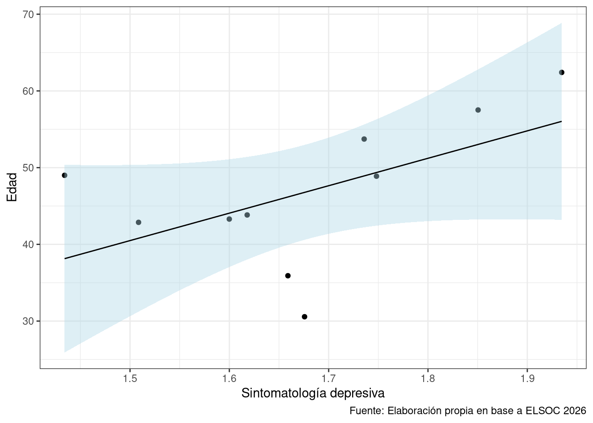
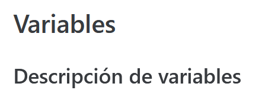

Reportes dinámicos 3
Completar hasta as 11:59 PM del martes, 7 de noviembre de 2023
Objetivo de la práctica
El objetivo de esta guía práctica es generar una plantilla de informe que nos sirva para desarrollar el trabajo final del curso.
En detalle, aprenderemos los siguientes contenidos:
- Organización de un informe en Quarto
- Generación y presentación de tablas y gráficos en Quarto.
- Cómo autoreferenciar elementos dentro un documento Quarto.
Además de la plantilla para el informe, dejamos a disposición una carpeta con un proyecto de R y la estructura de carpetas recomendada para la elaboración del trabajo:
- input: insumos, libro de códigos
- input/data: base de datos original
- procesamiento: archivos de sintaxis .R o .qmd
- output: bases de datos procesada, informes, tablas, gráficos
Crear un documento Quarto
Para generar un documento Quarto hacemos lo siguiente:

Organización de un informe en Quarto
Encabezado o YAML
Para comenzar, definiremos los elementos que van en el encabezado (front matter o YAML), al menos debemos especificar:
- Título
- Subtítulo
- Autores
- Fecha
- Idioma

Con ese YAML el encabezado queda de la siguiente forma:

Apartados y subapartados
Para los títulos de los apartados deben poner un #, y para los subapartados cada vez más pequeños dos o más #.
Por ejemplo, si ponemos:
# Variables
## Descripción de variables
Los apartados y subapartados diferirán en su tamaño y se verán de esta forma.

Nota
Para los ejemplos de esta plantilla utilizaremos la encuesta ELSOC, pero como sabemos, el trabajo se realiza con la encuesta CASEN.
Informe
Introducción
En este apartado pueden poner su introducción, de acuerdo con la pauta del trabajo que se encuentra disponible en el enlace.
Variables
En este apartado pueden poner sus variables, de acuerdo con la pauta del trabajo que se encuentra disponible en el enlace.
Podemos cargar las librerías sin que aparezca en nuestro informe, señalando la especificación al chunk echo=FALSE.
```{r librerias, echo=FALSE, warning=FALSE, message=FALSE, collapse=TRUE}
library(pacman)
pacman::p_load(tidyverse, # manipulacion datos
sjPlot, # tablas
confintr, # IC
gginference, # visualizacion
rempsyc, # reporte
broom, # varios
sjmisc) # para descriptivos
options(scipen = 999) # para desactivar notacion cientifica
rm(list = ls()) # para limpiar el entorno de trabajo
````Esto lo podemos repetir para la carga de la base de datos y el procesamiento de los datos.
```{r datos, echo=FALSE, warning=FALSE, message=FALSE}
load("../input/data/ELSOC_Long.RData")
```````{r procesamiento, echo=FALSE, warning=FALSE, message=FALSE}
# Filtrar casos y seleccionar variables
data <- elsoc_long_2016_2022 %>%
filter(ola==1) %>%
select(m0_sexo,m0_edad,m01,s11_01,s11_02,s11_03,s11_04,s11_05,s11_06,s11_07,s11_08,s11_09)
# remover NA's
data <- data %>%
set_na(., na = c(-888, -999)) %>%
na.omit()
# crear variable nueva
data <- data %>%
rowwise() %>%
mutate(sint_depresivos = mean(c(s11_01,s11_02,s11_03,s11_04,s11_05,s11_06,s11_07,s11_08,s11_09))) %>%
ungroup()
````Descripción de variables
En este ejemplo, se seleccionaron las variables:
- sexo: sexo del encuestado, con nivel de medición nominal
- edad: edad del encuestado, con nivel de medición intervalar
Y las variables del módulo de Salud y Bienestar, referentes a Estado de ánimo: sintomatología depresiva, con nivel de medición ordinal, los ítems son los siguientes:
- Frecuencia: Poco interés o alegría
- Frecuencia: Decaimiento, pesadez o desesperanza
- Frecuencia: Dificultad para dormir o exceso de sueño
- Frecuencia: Cansancio o sensación de falta de energía
- Frecuencia: Apetito disminuido o aumentado
- Frecuencia: Dificultad para concentrarse
- Frecuencia: Mala opinión de sí mismo
- Frecuencia: Enlentecimiento físico
- Frecuencia: Pensamiento de muerte o dañarse
En la Tabla 1 podemos ver que la proporción de mujeres que responde la encuesta corresponde a 60.12%, mientras que la propoción de hombres corresponde a 39.88%.
| Sexo | n | Proporción |
|---|---|---|
| 1 | 1151 | 39.88 |
| 2 | 1735 | 60.12 |
| a Fuente: Elaboración propia en base a ELSOC 2016. |
Análisis
En este apartado pueden poner sus análisis, de acuerdo con la pauta del trabajo que se encuentra disponible en el enlace.
Aqui ponemos el análisis, de acuerdo con la pauta.
En la Figura 1 es posible apreciar… La correlación entre la edad y el promedio de la sintomatología depresiva corresponde a 0.0176236
Conclusiones
En este apartado pueden poner sus conclusiones, de acuerdo con la pauta del trabajo que se encuentra disponible en el enlace.
Aquí redactamos algunas conclusiones.
Bibliografía
En este apartado pueden poner su bibliografía, de acuerdo con la pauta del trabajo que se encuentra disponible en el enlace.
Ponemos un - para generar un listado.
COES (2023). Radiografía del Cambio Social: Análisis de Resultados Longitudinales ELSOC 2016-2022. Presentación de Resultados COES. Marzo, Santiago de Chile.
R Core Team (2023). R: A Language and Environment for Statistical Computing. R Foundation for Statistical Computing, Vienna, Austria. https://www.R-project.org/.